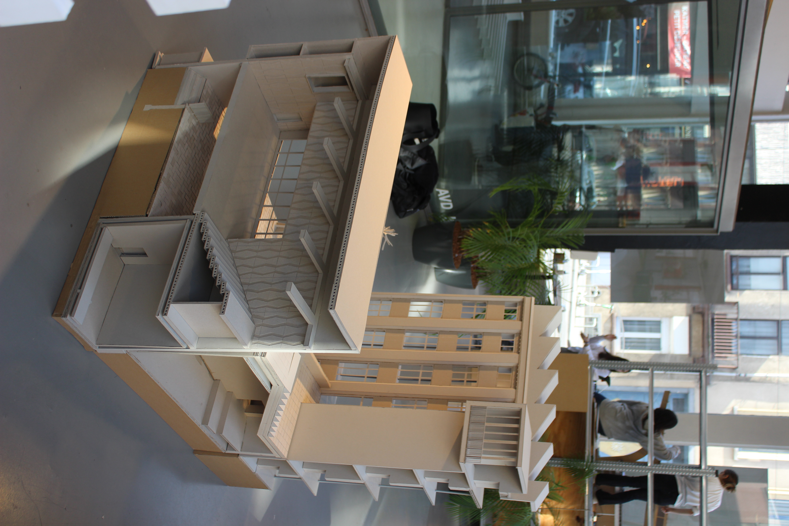
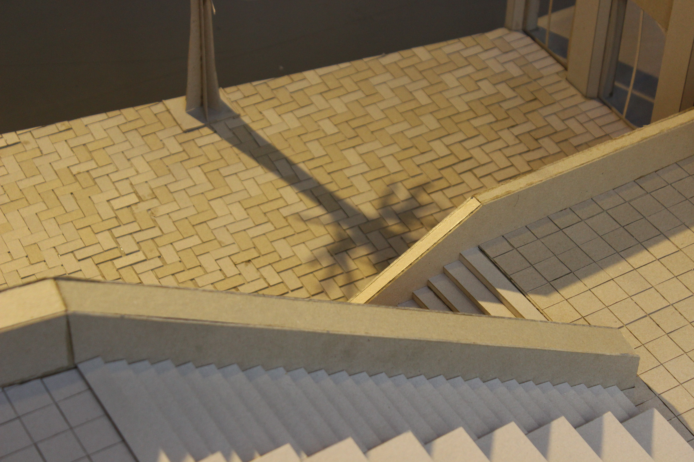
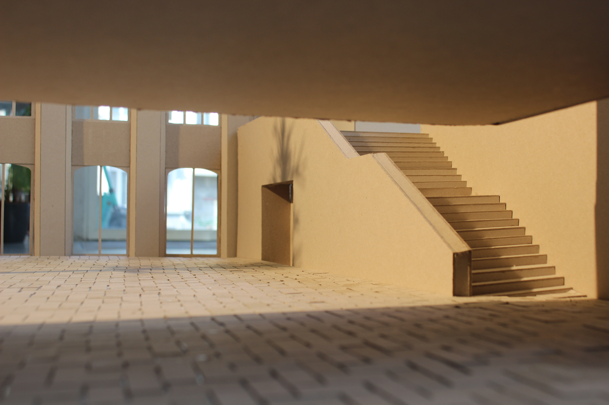

Picture of a model
Picture of a model

Picture of a model

Picture of a model

Picture of a model
 Isometry
Isometry
STUK
Group project with Louise Nys, Nils Wellens, and Felix Le Roy
Commissioned for the retirement of Dirk Jaspaert
As a tribute to the retirement of Dirk Jaspaert, we were invited to conduct an in-depth architectural study of STUK, a culturally significant building in Leuven. The project was centred around understanding the building’s spatial complexity and construction logic through close observation, analysis, and physical modelling.
Our group focused on unveiling the intricate layering of volumes, structural systems, and detailed connections that define STUK’s architectural language. By engaging directly with the building, we aimed to uncover the design principles and technical choices that shape its unique atmosphere and functionality.
As part of the assignment, we built a highly detailed physical model at a 1:50 scale, capturing essential sections of the structure and its material articulation. Alongside the model, we produced a comprehensive axonometric drawing to visually communicate our spatial and structural findings. This drawing was developed using AutoCAD and Rhino, combining precision with a clear graphic language.
Through this project, we not only honoured the architectural legacy of Dirk Jaspaert, but also deepened our own understanding of architectural composition, detailing, and representation.
Picture of a model
Isometry
michielwouters@outlook.be
+32 123 456 789
"Minimal design, maximum impact."